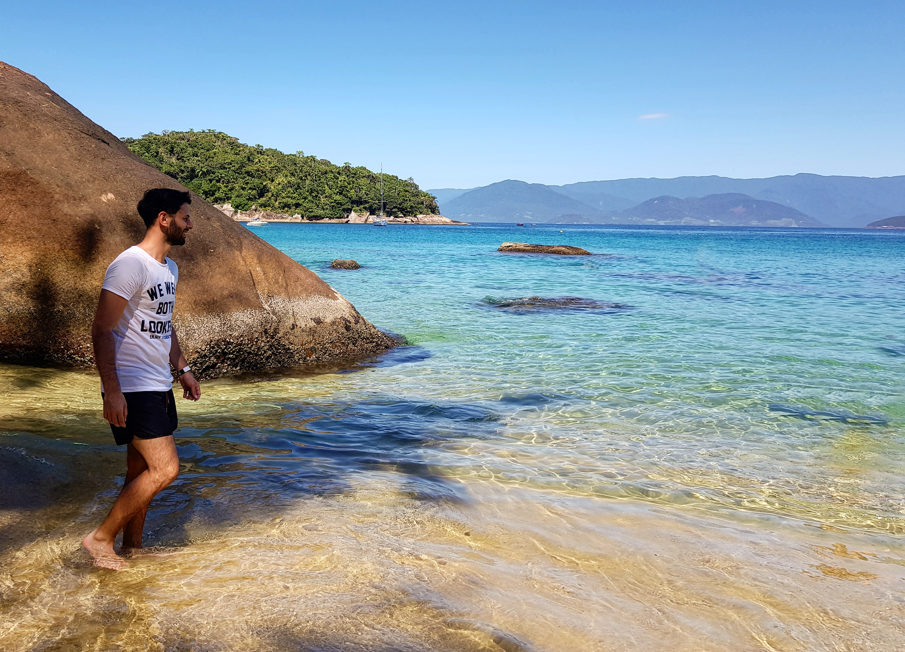
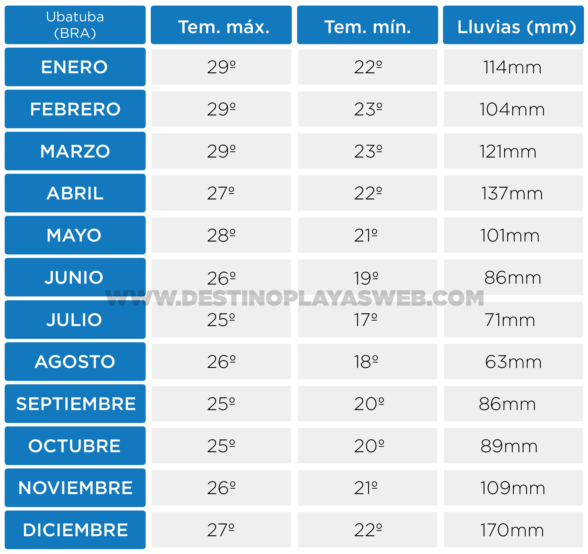

Ubatuba, el paraíso de San Pablo
Ilha das Couves, Ubatuba, Brasil.
¿Hay buenas playas en San Pablo? ¡Bienvenidos a Ubatuba! Una de las zonas playeras donde más vacacionan los brasileños, y a su vez, donde menos llegan los argentinos. La realidad es que Ubatuba no esta posicionada como un lugar turístico en nuestro país y eso nos da la posibilidad de poder irnos de vacaciones y vivir verdaderamente la cultura brasileña.
Las playas son de ensueño, colores cristalinos, aguas cálidas y mucha variedad de peces y tortugas. Ubatuba se encuentra a solo 4hs de San Pablo ciudad y se puede llegar en bus por 140 reales (2.100 pesos argentinos aproximadamente) por persona ida y vuelta. Los pasajes se pueden comprar directamente en las ventanillas de la terminal Tiete o en www.clickbus.com.br
¿Qué hacer en Ubatuba?
Ilha das Couves
Sin dudas, el mejor lugar de Ubatuba es Ilha das Couves. Una isla que literalmente parece sacada de un sueño, aguas totalmente cristalinas con colores azules y verdes intensos que nada tienen que envidiarle al Caribe y a las playas de Asia. El acceso es es mediante un barco que sale desde la hermosísima Praia de Picinguaba (1hs aproximadamente desde el centro de Ubatuba). La travesía en la embarcación demora alrededor de unos 10 minutos y cuesta 60 reales (900 pesos aproximadamente) en temporada alta, y según los locales, en temporada baja es de 30 reales (450 pesos).

Praia de Picinguaba, Ubatuba, Brasil. Desde esta hermosa playa salen las embarcaciones hacia Ilha das Couves.
Mi recomendación es que disfruten de Ilha Das Couves y después pasen el día en la Praia de Picinguaba, que es una delicia y en uno de los sectores, tiene árboles donde es posible quedarse bajo la sombra.
Trilha 7 praias

Praia Grande do Bonete, Ubatuba, Brasil. Esta playa se puede conocer mediante la caminata conocida como la "Trilha das 7 praias".
La "trilha das 7 praias" es una actividad totalmente gratuita donde podrás conocer 9 playas espectaculares y lo mejor, casi desiertas. Además, podrás disfrutar de un ambiente especial donde se mezcla la selva, el morro y el mar. El plato fuerte de esta caminata es el contacto con la naturaleza y en mi opinión la playa más destacada es Praia do Bonetinho. Otras playas interesantes son Praia do Peres y Praia Grande do Bonete.

Una pequeña y desierta playa encontrada en la caminata conocida como la "Trilha das 7 praias".
Para comenzar la caminata, que demora entre 3 y 5hs, dependiendo el ritmo y las paradas, tenemos que dirigirnos a Praia Fortaleza o Praia Lagoinha. A dichas playas se puede acceder tomando un bus desde el centro de Ubatuba.
¿Qué llevar a la caminata? Agua, repelente y protector solar. Si bien hay kioskos en algunas de las playas, los precios suelen ser bastante caros. Por lo tanto, es recomendable que lleven ustedes mismos provisiones desde el mercado.

Praia da Fortaleza, Ubatuba, Brasil. Es la última (o primera) playa de la caminata conocida como la "Trilha das 7 praias".
Praia do Portugues
El día que conocimos Ilha das Couves, nos quedamos un tiempo largo en la playa de Picinguaba y ahí conocimos a un señor brasileño que vacacionaba todos los años en Ubatuba. El nos dio una gran recomendación: "Conozcan Praia do Portugues".

Praia do Portugues, Ubatuba, Brasil.
Esta playa es bastante pequeña y se accede caminando desde un extremo de la Paria do Felix. La caminata es de pocos minutos, pero la dificultad es media. No es muy aconsejada para niños, ya que hay que cruzar rocas resbalosas y por momentos el agua puede subir considerablemente.
El resultado después de la caminata es espectacular, agua cristalina y calma con una zona arbolada de fondo que genera un ambiente único. Esta playa tenía una entrada a pie, pero lamentablemente los dueños del terreno por donde pasaba el camino decidieron hacer una casa y cerrar así la posibilidad de entrar de manera sencilla a la playa.
¿Cómo es el clima en Ubatuba?
¿Cómo es el transporte público en Ubatuba?
Hay buses que nos llevan a la mayoría de los puntos más interesantes, como por ejemplo a la Lagoinha (donde comienza la trilha das 7 praias), hasta Picinguaba y demás. Pero lo cierto, es que la infraestructura de transporte aún deja bastante que desear, a lo igual que la atención de los trabajadores de los buses. Nos sucedieron cosas increíbles, como por ejemplo, que un chófer no sepa los recorridos ni los horarios del bus que maneja. ¿Lo pueden creer?
La tarifa media de un bus es entre 4 y 6 reales, pero puede variar según a donde queramos ir. A su vez, la mayoría de los buses son de línea, es decir, hacen recorridos entre las ciudades pero no son de larga distancia. En caso de querer tomar un bus de larga distancia hay que dirigirse a las Rodoviarias (Terminales) de Ubatuba.
¿Cuánto cuesta comer en Ubatuba? Precios
Nuestra visita fue en enero, en plena temporada alta y los mismos locales nos confesaron el aumento de precios.
Una lata de cerveza en la playa cuesta alrededor de 5 reales (a lo igual que las gaseosas), unas papas fritas 30. Para almorzar y cenar, se consiguen pizzas entre 35 y 55 reales y platos entre 60 y 100 reales.
En Ilha das Couves, donde pensé que iba a ser el lugar más caro, los precios eran similares a los del resto de Ubatuba.